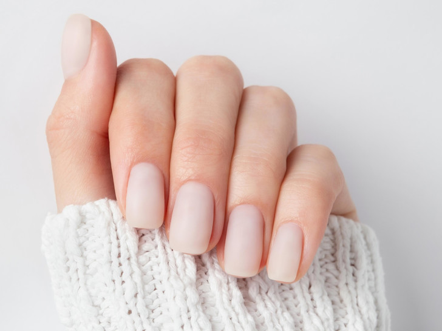
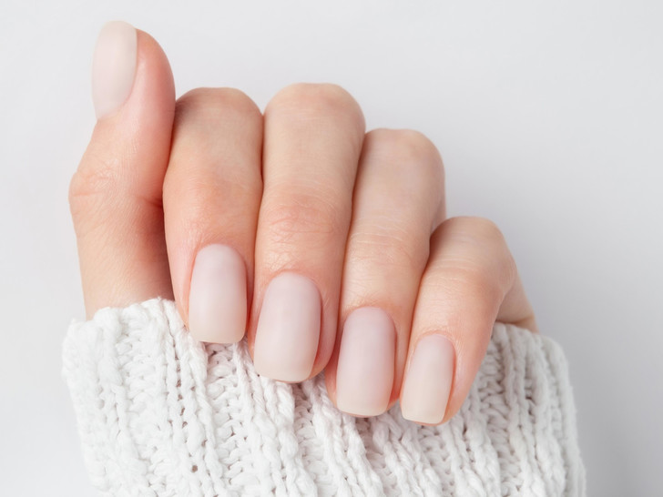

Японский маникюр, это комплексный уход за ногтевой пластиной, направленный на стабилизацию роста, укрепление и выравнивание ногтей. Процедура включает в себя несколько шагов:
1. Опил свободного края
2. Очищение ногтевой пластины с помощью средства для размягчения и удаления кутикулы
3. Нанесение пасты Ni и пудры Hon. Паста и пудра втираются в ногтевую пластину, за счет этого происходит укрепление и выравнивание ногтей. При этом появляется яркий блеск. Ногти приобретают здоровый ухоженный вид.
4. Для завершения процедуры необходимо воспользоваться закрепительными сыворотками. Сыворотка наносится как базовое покрытие для предотвращения вымывания пасты и пудры с ногтевых слоев.